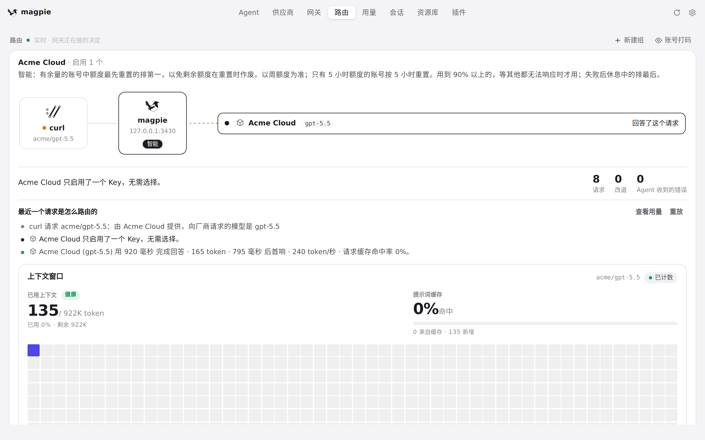

#1181 界面预览
commit 0c7252b · 回到 PR · 路由页在实时舞台下方新增「当前额度」区块：为当前舞台上的供应商显示用量页那套额度卡片（窗口、重置时间、读数时间、已用/剩余偏好），共享用量页的额度缓存与加载器并每分钟刷新；选中历史请求、过去的日期或重放时该区块隐藏（并保留占位），读取失败时保留上次卡片并显示不可用提示。
红线是鼠标走过的轨迹，红色圆环是一次点击；底部文字是这一步在做什么。空格暂停，← → 逐段查看。

路由页舞台下方的「当前额度」区块 · 路由页：网关实时决策的舞台
路由页舞台下方的「当前额度」区块 · 舞台下方、统计与请求日志之间的「当前额度」区块